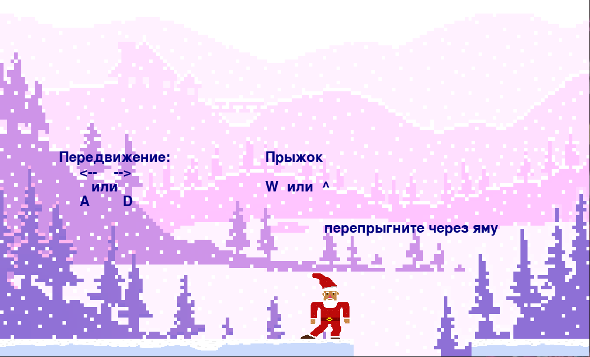

Дед Мороз шёл далеко далеко, за тридевять земель, чтобы подарить подарки маленьким детишкам.
Но тут случается беда! Он падает с обрыва и теряет все свои вещи. Помоги любимому Дедушке Морозу
найти подарки и дойти до детишек. Тебе предстоит встретиться с волшебными хитрыми коробками и трудностью
сурового климата отдалённых мест.
Вперёд к приключениям!